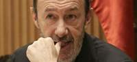
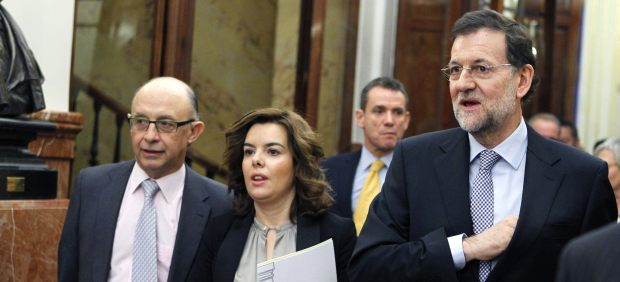

7.454.823 contribuyentes marcaron la x del IRPF para la Iglesia, casi 200.000 más
2012-02-15T11:57:44Z
AGENCIAS
- 7.454.823 declarantes marcaron la casilla en su última declaración (correspondiente al ejercicio de 2010).
- El incremento respecto al año anterior fue del 0,96%.
- En los últimos cinco años un millón de personas se han unido a las declaraciones a favor de la Iglesia.
El número de contribuyentes que marcó la "x" en la casilla correspondiente a la Iglesia Católica en la declaración del IRPF volvió a aumentar el pasado año hasta alcanzar los 7.454.823 declarantes.
Así, según los datos que ha facilitado este miércoles la Conferencia Episcopal Española, esa cifra (correspondiente al ejercicio fiscal 2010) supone un aumento de 194.685 nuevos contribuyentes que optaron por destinar una parte de su devolución a la Iglesia, lo que supuso un incremento del 0,96% respecto a las cifras del ejercicio anterior.
Destaca también que en los últimos cinco años se ha producido un aumento de casi un millón de declarantes a favor de la Iglesia, y el número de contribuyentes ha aumentado durante los últimos cinco años, excepto en 2008, cuando se redujo un 0,16%. Además, aseguran que, si se tiene en cuenta que el 23,8% de las declaraciones que se presentaron fueron conjuntas, se puede estimar que en la pasada primavera más de 9,2 millones de contribuyentes asignaron a favor de la Iglesia Católica.
A pesar del aumento del número de contribuyentes la asignación total cae hasta los 248,3 millones de euros (aproximadamente lo que le ha supuesto al Valencia la venta del Mestalla, o lo que le cuesta a Galicia la atención a la dependencia ). En el ejercicio nterior se recaudaron 249,4 millones de euros, algo más de un millón de euros menos (1.162.820).
El descenso en la cuantía, facilitada por el secretario general de la Conferencia Episcopal Española (CEE), Juan Antonio Martínez Camino, y el vicesecretario para asuntos económicos, Fernando Giménez Barriocanal, se explica, según la CEE, como ya sucedió el año pasado, por el "impacto de la crisis" que se ha notado, a nivel general, no sólo en la disminución del número total de declaraciones presentadas, sino también en el monto global de la cuota íntegra, que ha experimentado un "descenso muy significativo".
"El importante aumento en el número de personas que año tras año deciden asignar a favor de la Iglesia muestra que la percepción real que la sociedad tiene de la Iglesia es positiva", señala la CEE, que apunta que esta asignación alcanza al 35,71% de todas las declaraciones.
A favor de la casilla de la Ciencia
Al margen de la Iglesia, muchos españoles son partidarios de invertir en Ciencia. Un joven soriano de 25 años, Francisco Javier Hernández ha puesto en marcha una iniciativa para crear una casilla en la declaración de la Renta que permita a los ciudadanos ofrecer el 0,7% de sus impuestos a invertir en I+D+i (investigación, desarrollo e innovación).
Francisco Javier presentó ante el Ministerio de Hacienda nueve cajas con los apoyos conseguidos a través la plataforma Actuable.es. Un total de 283.500 firmas recogidas en poco más de un mes y que sigue incrementándose día a día.

Al menos 270 presos mueren al incendiarse una cárcel en el centro de Honduras
2012-02-15T11:13:44Z
EFE
- Decenas de personas han resultado heridas.
- El fuego se habría originado a causa de un cortocircuito.
- El incendio afectó a uno de los dos módulos de la prisión, donde hay 500 presos.
Alrededor de un 270 de presos murieron y decenas resultaron heridos en un incendio registrado en la cárcel de Comayagua, localizada en la región central de Honduras, según informó una fuente oficial.
La jefe de Medicina Forense del Ministerio Público, Lucy Marrder, dijo a los periodistas que la cifra de que dispone la Policía "es de 272 personas muertas", y que la identificación de los cuerpos llevará varios días
El portavoz de la Secretaría de Seguridad, Héctor Iván Mejía, dijo a los periodistas que por la información preliminar que se ha recibido, "al parecer un cortocircuito" habría sido la causa del siniestro en uno de los dos módulos del presidio, a unos 80 kilómetros de la capital hondureña.
El portavoz del Cuerpo de Bomberos de la ciudad de Comayagua, sargento Josué García, agregó que el siniestro comenzó hacia las 22.55 horas locales del martes (06.55 hora española de este miércoles) y que en hospitales de la ciudad de Comayagua han sido atendidos "decenas de quemados y heridos".
Una enfermera del estatal Hospital Santa Teresa dijo a los periodistas que una treintena de reos con muchas quemaduras, de tercer y cuarto grado, fueron atendidos en ese centro, mientras que otros han sido remitidos al Hospital Escuela en Tegucigalpa.
El sargento señaló que, según información proporcionada por personal de la cárcel, el incendio afectó a uno de los dos módulos del penal, en el que había "unos 500 presos", y que alrededor de un centenar pudieron haber fallecido por el fuego y el humo.
"Hay muchos cuerpos apilados en el interior de los módulos que seguramente intentaban pero no pudieron escapar del fuego, son cosas que se pueden apreciar", agregó el portavoz de los bomberos, quien explicó que cada una de las dos naves de la cárcel tiene cinco celdas.
Escapan varios presos
La policía no ha permitido el acceso a la prensa al interior de la prisión, que se localiza a orillas de la carretera que conduce de Tegucigalpa al centro y norte de Honduras.
Algunos de los reos que lograron escapar del fuego rompieron el techo y luego saltaron al vacío, según algunos dramáticos relatos de familiares de presidiarios; mientras que otros de los presos se habrían fugado, según la información preliminar.
El 17 de mayo de 2004, unos 107 reos murieron quemados en un incendio en el presidio de San Pedro Sula, la segunda ciudad del país.
Carnavales hay muchos: seis planes para disfrutarlo en España
2012-02-15T10:48:36Z
20MINUTOS.ES/EP
- 'El entroido' de Verin, en Ourense, saca a la calle a los 'cigarrones'.
- En Badajoz se montan enormes hogueras; son 'las candelas'.
- En Lanzarote, lo más celebrado es la 'parranda de los Buches'.
Llega el Carnaval. La mayoría de referencias de estos días apuntan en España a los carnavales de Cádiz, Santa Cruz o Las Palmas. Pero el carnaval es una tradición centenaria en cientos de localidades españolas. La diversidad es enorme. Apuntamos aquí siete planes para disfrutar de siete auténticos carnavales.
Verín, Badajoz y Solsona
En Ourense, merece la pena descubrir "el entroido" de Verin, un carnaval con nombre propio, de los más famosos de Galicia. Se conoce por sus Cigarrones, unos personajes que llevan una máscara de madera pintada con colores llamativos, unidas a prolongaciones de metal con motivos de animales. Visten camisolas blancas bordadas con hilos dorados y desfilan junto a carrozas y comparsas a la vez que celebran la alegría en una batalla de harina.
Badajoz es otro rincón para descubrir la fiesta de los desfiles y las máscaras. Aquí, el carnaval comienza con las Candelas cuando se queman enormes hogueras y se celebra la Tamborada. Estas jornadas están consideradas de Interés Turístico Regional y Nacional con sus concursos de murgas, de disfraces y desfiles de comparsas que se podrán ver por las calles de su casco histórico en estos días.
En la localidad ilerdense de Solsona, la principal atracción es la colgada de un campanario del 'Burro', hecho de cartón-piedra y peluche al compás de la canción "A Solsona bona gent". Son también tradicionales los gigantes y cabezudos que recorren sus calles llenándolas de ritmo y sonrisas. El carnaval de esta localidad fue declarado hace más de treinta años fiesta de Interés Turístico Nacional.
De Lanzarote a Sitges, pasando por Avilés
En Canarias hay carnaval más allá de Santa Cruz y Las Palmas. En Arrecife (Lanzarote) se celebra la "parranda de los Buches", un desfile compuesto por una cuadrilla de músicos que tocan canciones marineras. Son los portadores de los buches, vejigas de grandes peces infladas con las que a la vez se golpea a los espectadores. Como complemento, las murgas, batucadas y la elección de Reina y el Drag Queen.
En Asturias, Avilés organiza su conocido descenso de Galiana, acto central de su carnaval, en el que las carrozas descienden por la calle que lleva el mismo nombre, inundada de agua y espuma. Este acontecimiento está adornado con desfiles de disfraces y jornadas gastronómicas con menús de Antroxu con los que se puede degustar platos típicos de esta época.
Finalmente, Sitges, un carnaval con más de cien años de historia. En estas fiestas se elige al Carnestoltas, el Rey del Carnaval, que presidirá todos los actos oficiales junto a la Reina. Los desfiles más conocidos son las "Rúas de la Disbaixa y del Extermini" que con sus carrozas y disfraces llaman la atención de nuerosos turistas cada año.
Alemania es la nueva perseguidora de la selección española en el ránking FIFA
2012-02-15T10:17:04Z
EFE
- España sigue al frentre de la clasificación con 1.566 puntos.
- Alemania supera a Holanda, que ahora es tercera.
- Zambia, tras su título en la Copa de África, asciende hasta el puesto 43.
España tiene una nueva perseguidora en la clasificación Mundial de la FIFA ya que Alemania superó a Holanda, que ahora es tercera; mientras que Zambia, tras su título en la Copa de África, asciende hasta el puesto 43.
Portugal, que gana un puesto para ser sexta, e Italia, que asciende una posición para ser octava, junto a Dinamarca, también con un escalón ganado, décima, son los cambios que se registran entre las diez primeras posiciones.
El ascenso de Dinamarca en el 'Top 10' es a costa de Argentina que baja a la undécima posición. Uruguay sigue cuarta y Brasil pierde una plaza y cae hasta la séptima plaza.
Estos cambios se deben a la devaluación de los partidos de años anteriores ya que el mes pasado ninguno de los diez mejores disputó encuentro alguno.
Los cambios en la relación de fuerzas continental han sido mínimos: la UEFA tiene 27 equipos entre los 50 mejores (-1), la CONMEBOL 9, la CAF 6, la CONCACAF 4 (+1), la AFC 4 y la OFC ninguno.
Para la clasificación mundial actual se tuvieron en cuenta 51 partidos: 32 de ellos se disputaron en el marco de la Copa Africana de Naciones y 19 fueron amistosos.
La próxima clasificación mundial de la FIFA se publicará el 7 de marzo de 2012, una semana antes de lo previsto.
- Clasificación
.1. España 1.566 puntos
.2. Alemania 1.369
.3. Holanda 1.359
.4. Uruguay 1.317
.5. Inglaterra 1.179
.6. Portugal 1.155
.7. Brasil 1.152
.8. Italia 1.115
.9. Croacia 1.101
10. Dinamarca 1.090
'Chico & Rita' se podrá ver gratis en Filmotech hasta la noche de entrega de los Oscar
2012-02-15T09:59:55Z
EFE
- La película estará disponible con un número límite de 6.000 visionados.
- La fecha límite es el domingo 26 de febrero, cuando se sabrá si la obra de Fernando Trueba y Mariscal gana o no el Oscar a la mejor película de animación.
- 'Chico & Rita' compite contra tres productos de Hollywood y una cinta francesa.
Los internautas podrán juzgar por sí mismos si Chico & Rita, de Fernando Trueba y Javier Mariscal, merece ganar el Oscar a la mejor película de animación el domingo 26 de febrero, ya que desde hoy está disponible de manera gratuita en el portal de visionado de cine español y latinoamericano Filmotech.
Hasta la noche de los premios de la Academia de Hollywood y con un número límite de 6.000 visionados, estará disponible en exclusiva este filme, que se ha convertido en el primero de animación española en concurrir a los Oscar y podría dar a Trueba su segunda estatuilla, tras la conseguida por Belle Epoque.
Chico & Rita es la intersección de dos talentos, el de un cineasta tan melómano como Trueba y un diseñador tan prolífico como Mariscal, en torno a la historia de amor entre un pianista y una cantante a quienes el destino va uniendo y separando durante sus vidas.
Ambientada en La Habana y Nueva York de los años 40 y 50, con voces reconocibles como las de Estrella Morente y Bebo Valdés, Chico & Rita pugna desde lo artesanal en una categoría en la que compiten tres productos de Hollywood -El gato con botas, Kung Fu Panda 2 y Rango- y una cinta francesa, Un gato en París.
Si Chico & Rita se impone a todas ellas en Los Ángeles, Trueba sumará otro Oscar más a una vitrina en la que ya figuran un Goya, un premio José María Forqué, el premio Sant Jordi a mejor película del año, el Premio del Cine Europeo y dos Premios Gaudí.
La OTAN lamenta la muerte de ocho niños en uno de sus bombardeos en Afganistán
2012-02-15T09:47:04Z
EFE
- El ataque se produjo el 8 de febrero y mató a ocho niños de entre 6 y 14 años.
- La OTAN ha evitado asumir la responsabilidad por las muertes.
- Karzai impedirá las operaciones sin coordinación de las tropas internacionales.
La misión de la OTAN en Afganistán expresó este miércoles sus "condolencias" por el fallecimiento de ocho niños en un bombardeo aéreo la semana pasada en el este del país, aunque evitó asumir la responsabilidad por las muertes.
En su comunicado, la Fuerza Internacional de Asistencia a la Seguridad (ISAF) señala que "da sus más sentido pésame a las familias y allegados" por la muerte de los "jóvenes" y añade que "las circunstancias de este trágico incidente están aún por determinar".
Hace dos días, las autoridades afganas afirmaron en rueda de prensa que un bombardeo de la ISAF "en la zona de Gayawad, de la provincia de Kapisa, acabó con las vidas de ocho niños con edades comprendidas entre 6 y 14 años".
Las autoridades afirmaron que, según una investigación del Ejecutivo afgano, otro ataque de la ISAF fue responsable también de la muerte hace un mes de nueve civiles -de ellos una mujer y tres niños- de la misma familia en la provincia oriental de Kunar.
Tropas internacionales
"La misión de mis fuerzas es proteger a los civiles de Afganistán", declaró mediante un comunicado el máximo responsable de la ISAF, John Allen, quien añadió que se toma "muy en serio cada pérdida de una vida afgana".
Las muertes de civiles en operaciones de las tropas internacionales son uno de los principales puntos de fricción entre la misión de la OTAN en Afganistán y el Gobierno presidido por Hamid Karzai, que ha calificado estos hechos como "inaceptables".
Karzai ha ordenado al Ministerio de Defensa afgano que impida que las tropas internacionales lleven a cabo operaciones sin coordinación y que asuma el control de las operaciones nocturnas.
José Coronado: "Compito con monstruos como Luis Tosar o Antonio Banderas"
2012-02-15T09:37:46Z
RAFA VIDIELLA
- Aspiran a ganar el Goya al mejor actor por su trabajo como policía repugnante en 'No habrá paz para los malvados'.
- "Me importan más la aceptación del público y la crítica que los premios".
- Entrevista a Luis Tosar, candidato al Goya por 'Mientras duermes'.
Rozó dos veces el Goya como actor de reparto, y ahora es el favorito para ganarlo como actor principal por No habrá paz para los malvados.
¿Cómo vive la candidatura?
Con la máxima felicidad.
Pero ya sabía que tenía muchas posibilidades.
Había un runrún, pero tampoco me fijo en esas cosas. Me importan más la aceptación del público y la crítica que los premios, aunque son la guinda que corona una tarta.
Una guinda jugosa, imagino.
Desde luego. Sobre todo porque además hay otras 13 candidaturas para la película. La mía es una de las más difíciles, porque estoy con monstruos como Banderas o Tosar.
Tosar lo da como favorito....
Lo dice porque es muy buen amigo y un tío muy humilde, pero él es favorito, siempre, a cualquier premio. Él y Bardem son mis referentes: disfruto y aprendo viéndolos.
¿Siempre supo que Santos era un personaje especial?
Sí, porque era un bombón, pero lleno de veneno: es complejo lograr que el espectador cree empatía con alguien que empieza la película borracho y matando. Es un personaje que habla más con silencios y miradas que con palabras, pero tuve la suerte de tener detrás a Urbizu: me conoce muy bien y llevábamos cuatro años preparándola.
¿Sentía que era un papel mejor que otros que ha hecho?
Nada más leer el guión vi que era un personaje para brillar, pero luego necesitas que la suerte te acompañe y que el trabajo de todos esté a la altura de ese guión. Creo que Urbizu lo ha conseguido.
¿Qué hará hasta el domingo?
Trabajar. Estoy en Barcelona rodando una película, y eso es lo que más me gusta de mi profesión: levantarme muy prontito, ponerme el casco y currar todo lo que pueda.
Cuando todas las miradas apuntan a Santos (por Max Boraita)
El Goya al mejor actor principal parece tener dueño: José Coronado. Sería justo: Santos es uno de esos villanos que gustan a todos, y el actor lo borda. Además, habría algo de justicia histórica en premiar a uno de los rostros más populares de nuestro cine, cuya trayectoria es un ejemplo de superación: de simple galán ha terminado afrontando papeles complejos. Daniel Bruhl tendrá que esperar, pese a que gran parte de las muchas emociones de Eva pasaran por su personaje. En Mientras duermes, Luis Tosar hace lo acostumbrado: cumplir como el gran actor que es. Y sobre Antonio Banderas y su cirujano de La piel que habito está todo dicho:a medio camino entre lo cómico, lo terrorífico y lo grotesco, el malagueño salva los muebles. No mucho más.
La inflación interanual inicia 2012 a la baja y se sitúa en el 2%
2012-02-15T09:24:11Z
EFE
- Descendió cuatro décimas el primer mes del año según el Índice de Precios de Consumo (IPC).
- La razón es la estabilidad de los precios de la electricidad y del tabaco, que en 2011 subieron. También la vivienda y los servicios telefónicos.
- La variación mensual, con una caída del 1,1%, se debe a la repercusión de las rebajas de invierno y a la caída en viajes organizados.

La inflación interanual inició 2012 con un descenso de cuatro décimas y se situó en enero en el 2%, la tasa más baja desde agosto de 2010, según el Índice de Precios de Consumo (IPC) publicado por el Instituto Nacional de Estadística (INE).
La inflación interanual del 2% coincide con el dato adelantado publicado por el INE el pasado 31 de enero y significa que el IPC continúa con la senda de caída que había iniciado en septiembre de 2011 cuando alcanzó el 3,1%.
Los grupos que más influyeron en la disminución de la inflación anual fueronla estabilidad de los precios de la electricidad, que subió en 2011, la vivienda, cuyos precios descendieron casi dos puntos y medio respecto al mismo mes de hace un año, las comunicaciones, con una caída de los precios de dos puntos, consecuencia de la disminución de los precios de los servicios telefónicos y las bebidas alcohólicas y el tabaco.
También tuvieron repercusión en la caída de la inflación interanual la bajada de los precios del viaje organizado y los servicios recreativos y deportivos, mientras que el transporte fue el único sector que incrementó sus precios en tasa anual, debido a las subidas de los carburantes y lubricantes.
El INE ha publicado también el Índice de Precios de Consumo Armonizado (IPCA), que mide la evolución de los precios con el mismo método en todos los países de la zona del euro, según el cual la inflación interanual ha quedado en enero en el 2%, cuatro décimas menos que el mes anterior.
El IPC mensual cayó un 1,1%
En enero la tasa de variación mensual del IPC general fue de una caída del 1,1%, debido a la repercusión que tuvieron las rebajas de invierno, sobre todo en el vestido y el calzado, y también por la caída de los viajes organizados.
La inflación subyacente -que excluye la variación de los precios de los alimentos frescos y la energía por ser los más volátiles- se mantuvo en el 1,3%, dos décimas por debajo de la registrada el mes anterior.
En la evolución mensual, la caída de los precios en enero se debió fundamentalmente a la influencia negativa del vestido y el calzado y por la caída de precios del ocio y la cultura, sobre todo de los viajes organizados (habitual en esta época del año).
La bajada de los precios de los servicios telefónicos también influyeron negativamente, así como el descenso de precios en el menaje.
En sentido contrario, en la variación mensual tuvieron repercusión positiva el transporte, cuyos precios subieron el 1,8%, la vivienda, debido al incremento del agua, gasóleo para calefacción y recogida de basura, otros bienes y servicios como los seguros y los alimentos y bebidas no alcohólicas, donde destaca el alza de los precios de las frutas frescas, legumbres, hortalizas y leche.
Todas las comunidades autónomas disminuyeron la tasa de inflación respecto al mes pasado y mientras el Principado de Asturias y Extremadura fueron las que más caídas registraron hasta llegar a unas tasas del 2% y del 1,7%, respectivamente, las Islas Baleares y la Comunidad Valenciana fueron las que menos descenso tuvieron, con tasas interanuales del 2,1% y del 1,9%.
Cristiano, a la caza de Di Stéfano y la delantera del Real Madrid, a la de un nuevo récord
2012-02-15T09:04:57Z
EFE
- El delantero portugués logró el pasado domingo, ante el Levante, su decimotercer triplete como futbolista del Real Madrid.
- Alfredo Di Stéfano se retiró marcando veintidós 'hat-tricks'.
- El trío Cristiano-Benzema-Higuaín quiere el récord culé de los 100 goles.
El delantero portugués Cristiano Ronaldo logró el pasado domingo, ante el Levante, su decimotercer triplete como futbolista del Real Madrid, superando a Ferenc Puskas y situándose a la caza de Alfredo Di Stéfano, que se retiró marcando veintidós 'hat-tricks'.
Los registros goleadores de Cristiano Ronaldo con el Real Madrid van camino de batir todos los récords históricos del club: 121 goles en 122 partidos. Si la temporada pasada fue la más goleadora, destrozando el récord de Telmo Zarra y Hugo Sánchez, al convertirse en el único jugador que marca 41 tantos en una campaña y 54 en todas las competiciones, en el presente va camino de superarse.
Ha marcado 27 goles en 22 jornadas de Liga y llega a 33 contando la Copa del Rey en la que el Real Madrid ha caído en semifinales ante el Barcelona y la Liga de Campeones en la que se encuentra en octavos de final.
Ante el Levante Cristiano firmó su decimotercer triplete desde que llegó al Real Madrid, el sexto de la presente campaña igualando a falta de 16 jornadas para el final del campeonato los que consiguió la pasada. Se sitúa entre dos mitos del madridismo tras superar a Puskas y comenzar la "persecución" a Di Stéfano.
En su primera temporada Cristiano logró su primer 'hat-trick' en la antepenúltima jornada. La pasada campaña ya batió récords y ahora ha conseguido tripletes en los partidos ante Rayo Vallecano, Osasuna y Levante en el estadio Santiago Bernabéu, más Real Zaragoza, Málaga y Sevilla a domicilio.
Con 94 goles en 85 partidos de Liga, Cristiano ya es dos años y medio el decimotercer goleador de la historia del Real Madrid. Clasificación que lidera Raúl González con 228 goles.
Trío fantástico
Pero no solo este nombre propioes plena actualidad en el Real Madrid.
Cristiano, junto a Higuaín y Benzema, forman el trío más goleador de España y van camino de liquidar el récord que establecieron en la 2008-09 los cien goles en partidos oficiales que sumaron Messi (38), Etoo (36) y Henry (26).
- Futbolistas del Real Madrid con más tripletes en Liga:
1. Di Stéfano 22
2. Cristiano Ronaldo 13
3. Puskas 12
4. Alday 8
5. Hugo Sánchez 7
6. Pahíño 7
7. Sañudo 6
8. Amancio 4
- Los tripletes de Cristiano en Liga:
Temporada Partido Resultado Goles
========= ======= ========= =====
2009/10 Mallorca-Real Madrid 1-4 3
2010/11 Real Madrid-Racing 6-1 4
2010/11 Real Madrid-Athletic 5-1 3
2010/11 Real Madrid-Villarreal 4-2 3
2010/11 Real Madrid-Málaga 7-0 3
2010/11 Sevilla-Real Madrid 2-6 4
2010/11 Real Madrid-Getafe 4-0 3
2011/12 Zaragoza-Real Madrid 0-6 3
2011/12 Real Madrid-Rayo 6-2 3
2011/12 Málaga-Real Madrid 0-4 3
2011/12 Real Madrid-Osasuna 7-1 3
2011/12 Sevilla-Real Madrid 2-6 3
2011/12 Real Madrid-Levante 4-2 3.
- Clasificación histórica de goleadores del Real Madrid en Liga:
Nombre Goles Partidos
====== ===== ========
.1. Raul Gonzalez 228 550
.2. Di Stéfano 216 282
.3. Santillana 186 461
.4. Hugo Sanchez 164 207
.5. Frenec Puskas 155 179
.6. Paco Gento 125 428
.7. Emilio Butragueño 123 341
.8. Pirri 123 417
.9. Amancio Amaro 119 344
10. Manuel Pahiño 108 125
11. Fernando Hierro 103 439
12. Michel 97 404
13. Cristiano Ronaldo 94 85.
Rubalcaba a Rajoy: "Le resumiré su reforma: o aceptas la bajada de salarios o ahí tienes la puerta"
2012-02-15T08:41:11Z
20MINUTOS.ES
- En la sesión de control del Congreso el líder socialista ha cuestionado la reforma laboral: "Esa no puede ser la forma de crear empleo".
- El presidente del Gobierno reconoce que la reforma laboral "es tal vez la más importante" de todas las medidas que han aprobado.
- "Es verdad que van a perder mucho poder las organizaciones empresariales y sindicales pero tenemos que gobernar para la gente".

El líder socialista, Alfredo Pérez Rubalcaba ha preguntado al presidente del Gobierno, Mariano Rajoy, en la sesión de control del Congreso, por la utilidad para el país de las medidas que está adoptando el Ejecutivo, horas antes de reunirse con él en el Palacio de la Moncloa.
Rubalcaba ha comenzado con una breve pregunta: "¿Considera que las medidas que está tomando su Gobierno son las que necesita el país?
"Yo creo que sí, si no lo creyera logicamente no las tomaría" ha contestado el presidente del Gobierno, que también ha reconocido que habrá que adoptar más medidas y que en ello están trabajando.
"Creo que no van a producir efectos en el corto plazo" ha reconocido Rajoy, achacándolo especialmente al entorno europeo, "pero estamos sentando las bases para crecer de manera sostenible y por tanto crear empleo".
En su segunda intervención el líder de la oposición se ha centrado en la reforma laboral recientemente aprobada. Ha recordado que "se pasaron la campaña diciendo que no abaratarían el despido" y ha destacado que lo peor que se puede hacer si se aproxima un recesión es precisamente abaratar el despido.
"Dijeron que simplificarían los contratos y hay uno más" ha recalcado también, insistiento en que "han creado un contrato con un año de prueba, de despido libre y gratuito".
Por último Rubalcaba ha destacado que con la reforma laboral "han roto los equilibrios dando todos los poderes al empresario, poderes omnímodos. Ahora hay una corriente que habla de dar flexibilidad a las empresas y seguridad a los trabajadores, flexiseguridad lo llaman. Lo suyo es flexinseguridad. Y la inseguridad es lo peor para la economía, el crecimiento económico y la creación de empleo".
Rubalcaba ha concluido diciendo: "Le resumiré su reforma laboral: "O aceptas la bajada de salarios ahí tienes la puerta". Y esa no puede ser la forma de crear empleo en España".
El presidente del Gobierno ha recordado en su respuesta las diferentes medidas y decisiones que ha tomado el Gobierno "hemos reducido el déficit, aprobado la Ley de Estabilidad Presupuestaria o la norma de reestructuración de sistema financiero para que vuelva el crédito entre otras medidas", reconociendo al final que la reforma laboral "es tal vez la más importante".
"Entiendo que no le guste pero la situación anterior no nos llevaba a ninguna parte" ha insistido Rajoy en su respuesta a Rubalcaba, que ha recordado a continuación los datos de paro españoles: "Tenemos más paro que el doble de la media europea".
El jefe del Ejecutivo ha recordado que ya existían los despidos con indemnización de 20 y 33 días, pero que ahora van a funcionar "de verdad".
Ha comentado que sólo tenían dos opciones, seguir como estaban, que no conducía a ninguna parte "o una reforma laboral en la línea de lo que se esta planteando en Europa". Ha dicho que en la reforma laboral "hay normas para garantizar flexibilidad" y que "de lo que se trata es de facilitar la contratación de jóvenes".
Ha reconocido por último "es verdad que van a perder mucho poder las organizaciones empresariales y sindicales pero nosotros tenemos que gobernar para la gente".
El musical, claves de un fenómeno en auge en España
2012-02-15T07:55:01Z
ARANCHA SERRANO
- En forma de franquicia internacional, repertorio de un artista nacional u obra infantil, los títulos proliferan en las carteleras españolas en plena crisis.
- Su éxito radica en su capacidad para emocionar.
No es teatro al uso: requiere mayores recursos, mayor presupuesto e, inevitablemente, una entrada más cara. Y sin embargo, el público acude en masa. El musical vive en España su edad de oro, pero, ¿cómo es posible que en plena crisis prolifere la oferta de musicales? ¿Cómo empezó todo?
La mayoría de los productores coinciden en afirmar que El hombre de la Mancha y el fallecido productor Luis Ramírez hicieron mucho por abrir el camino en 1997: reconstruyó un teatro en declive, el Lope de Vega, y sentó las bases para convertir la Gran Vía madrileña en el nuevo Broadway. Montajes de gran altura como Cats, La Bella y la Bestia, El fantasma de la ópera o Mamma Mía! contribuyeron enormemente a esto.
En 2005 se produjo otro punto de inflexión. Hoy no me puedo levantar, que aunaba los éxitos de Mecano en una trama actual, batió récords aún incólumes: seis años de representaciones ininterrumpidas, 2,5 millones de espectadores... "Sentó un precedente. Cambió la percepción que la gente joven tenía de los musicales. La historia era próxima y alternativa. Nunca se había apostado así por un artista nacional", explica el productor José María Cámara, actual presidente de Drive Entertainment, que ha repetido la exitosa fórmula (un subgénero llamado jukebox) en otros musicales como Más de 100 mentiras y 40 El musical.
Estos musicales jukebox recogen la "bolsa de afecto" -así lo llama Cámara- del público, la emoción que les produce ver y escuchar temas que significan mucho para ellos. Un filón que han explotado otros musicales como Forever King of Pop, sobre Michael Jackson, o Pretty Woman, My Love, estrenado en febrero, que con un talent show como telón de fondo, repasa los hits de los setenta, ochenta y noventa. Curiosamente, sus artífices huyen de la palabra revival o nostalgia, y prefieren el término 'homenaje'. En opinión de Cámara, en realidad se busca un valor de referencia, es decir, "ir a lo seguro en tiempos de incertidumbre".
Julia Gómez Cora, directora de Stage Entertainment (Los Miserables, Chicago, El Rey León), cree que el atractivo de los musicales reside en su carácter multidisciplinar, pero va mucho más allá: "Es algo que transforma la vida del espectador, es increíble cómo recuperan el ánimo en momentos de depresión. Lo ves una vez y lo recuerdas para siempre".
Otro importante factor es el turismo asociado a los musicales. Stage ha sido pionera en llegar a acuerdos con touroperadores, de tal forma que el 55% de los espectadores de El Rey León llegan de fuera. "Antes tenías que ir a Londres o a Nueva York, ahora tienes aquí musicales en español", asegura Gómez Cora. El Rey León es, además, el musical con mayor preventa de Europa: de las 350.000 entradas vendidas desde su estreno en octubre, 250.000 han sido por preventa, y casi no hay butacas libres hasta julio.
Entre las últimas novedades en cartel destaca Follies, recién estrenado en el Teatro Español (Madrid), un mítico musical de Stephen Sondheim nunca antes representado en España, con Vicky Peña, Carlos Hipólito, Massiel y Asunción Balaguer. "Un homenaje al género de la revista, a una profesión que se nutre de lo efímero, que son los aplausos", explica su director, Mario Gas, que reniega de la nostalgia. También prefieren usar el término 'homenaje' los responsables del musical A quien le importa, con los éxitos ochenteros de Carlos Berlanga, que llegará en diciembre.
Por otro lado, en los últimos años se ha disparado el número de musicales infantiles. Vienen asociados a series o películas (Bob Esponja, Shreck, Pocahontas, La abeja Maya), a grupos míticos (Parchís) y también a la literatura, con clásicos como Pinocho, El mago de Oz, Alicia en el País de las Maravillas o Peter Pan, así como best sellers actuales, como Gerónimo Stilton.
La productora de este último, Noemí Díaz, está convencida de que el musical es una excelente forma de incentivar al niño para ir al teatro, introducirlo en el mundo de la cultura "y de paso, enseñarle a estar sentado en una butaca y calladito". Pero no todo vale: "La dirección es fundamental, y también los recursos técnicos".
Cartelera de musicales
El rey león: Teatro Lope de Vega. Madrid. En cartel desde 2011 y sin fecha de finalización.
Sonrisas y lágrimas, el musical: Centro Cultural Novacaixagalicia. Vigo. Del 9/7/2012 al 22/7/2012. Teatro Miguel de Cervantes. Málaga. Del 14/6/2012 al 20/6/2012. Teatro Calderón. Valladolid. Del 15/2/2012 al 21/2/2012. Teatro Principal. Alicante. Del 26/4/2012 al 6/5/2012. Teatro Principal. Valencia. Del 25/2/2012 al 1/4/2012.
Más de 100 mentiras. Sabina, el Musical: Teatro Rialto. Madrid. Sin fecha de finalización.
Pretty Woman, My Love: Teatro Nuevo Apolo. Madrid. Hasta el 1/4/2012.
Grease, el musical: Teatro Arteria Coliseum. Madrid. Desde el 21/2/2012.
40 El musical: Gran Teatro. Córdoba. Del 8/3/2012 al 11/3/2012.
Los Miserables: Barcelona Teatre Musical. Hasta el 18/3/2012.
Peter Pan, el musical: Teatro Olympia. Valencia. 6/12/2012 hasta 9/12/2012.
Pocahontas, el musical: Teatro Arteria Coliseum. Madrid. Del 26/2/2012 al 25/3/2012. Teatro Filarmónica. Oviedo. 26/2/201
Gerónimo Stilton, el musical: Teatro La Latina. Madrid. 30/3/2012 hasta 6/5/2012.
Parchís: Palacio Ópera. A Coruña. 17/3/2012.
La economía de la zona euro se contrajo tres décimas en 2011 y tres países entraron en recesión
2012-02-15T07:39:36Z
AGENCIAS
- Italia, Países Bajos y Bélgica entraron en recesión en el último trimestre al haber encadenado dos consecutivos con retrocesos de la actividad económica.
- El PIB de la zona euro experimentó una contracción de tres décimas respecto a los tres meses anteriores, cuando apenas creció un 0,1%.
- En términos interanuales la economía en el conjunto de la UE creció un 0,9%; por otro lado, en 2011, la economía de los Veintisiete creció un 1,6%.
Italia, Países Bajos y Bélgica entraron en recesión en los últimos tres meses de de 2011 al encadenar dos trimestres consecutivos con retrocesos de la actividad económica. Se sumaron así a Portugal y Grecia, mientras que Irlanda y Eslovenia, cuyos datos no estaban disponibles, ya habían registrado una contracción del Producto Interior Bruto (PIB) en el tercer trimestre.
En el último trimestre del pasado año, el Producto Interior Bruto (PIB) de la zona euro se contrajo tres décimas respecto a los tres meses anteriores, experimentando apenas una subida del 0,1%. Aunque el dato global de 2011 es más optimista: el crecimiento fue de un 1,5%.
Por otro lado, en el conjunto de la UE, la economía sufrió un retroceso de tres décimas en el cuarto trimestre -creció un 0,3%-, mientras que en términos interanuales creció un 0,9%. En el conjunto de 2011, la economía de los Veintisiete creció un 1,6%.
En el caso de Italia, el PIB retrocedió siete décimas en el cuarto trimestre, tras caer un 0,2% en el tercer trimestre, mientras que en el caso de Bélgica la economía bajó un 0,2% en el último trimestre tras caer un 0,1% en el tercero. A su vez, el PIB de Países Bajos retrocedió siete décimas en el cuarto trimestre, después de haberse contraído un 0,4% en el tercero.
Por otro lado, la economía de Alemania se contrajo en el último trimestre de 2011 al reducirse su PIB un 0,2% frente al trimestre anterior, según datos de la Oficina Federal de Estadística (Destatis).
La contracción, que había sido vaticinada por expertos de todos los institutos de estudios económicos, fue menor de lo esperado, señalaron los técnicos de la oficina. En una primera estimación en enero pasado, Destatis había augurado para el PIB alemán un retroceso del 0,25% en el último trimestre de 2011, mientras algunos institutos se habían mostrado mas pesimistas aún.
La economía francesa, por su parte, creció un 0,2% del PIB en el cuarto trimestre de 2011, lo que supuso una ralentización respecto a los tres meses precedentes, cuando había subido un 0,3%, informó el Instituto Nacional de Estadística (INSEE) en un comunicado.
La economía había progresado un 0,9 % en el primer trimestre, pero esa marcha positiva se vio cortada en el segundo, con una caída del 0,1%. El crecimiento económico en 2011 fue del 1,7 %, superior al 1,4 % constatado en 2010, se debió en primer lugar a la demanda interna, que aportó un punto de PIB, mientras que las variaciones de existencias de las empresas contribuyeron con nueve décimas.
Guardiola reparte elogios y castigos en Leverkusen
2012-02-15T07:30:01Z
20MINUTOS.ES / AGENCIAS
- El técnico culé alaba a los "artistas" que ganaron en Leverkusen.
- Sin embargo, deja fuera a Xavi y a Piqué.
- Del primero dice que no está "fino".
- Del segundo, que no tiene motivos para enfadarse y que le quiere mucho.
El entrenador del FC Barcelona, Pep Guardiola, repartió elogios y 'castigos' a partes iguales el martes en Leverkusen.
Guardiola dosprendió a todos dejando fuera de la convocatoria a Piqué y a Xavi.
A pesar de que la decisión de dejar fuera al central llega tras su mal partido en Pamplona y de su accidente de coche, que le hizo llegar tarde a la concentración, Guardiola elude cualquier polémica y negó que el central haya sido castigado o que esté molesto al quedar fuera de la convocatoria porque, según Pep, se debe a la sanción de Mascherano y Alves para el próximo partido. "No, he escogido a dieciocho. La semana que viene no tenemos a Mascherano ni Alves. No tiene motivos para estar enfadado, sabe que le quiero. Es muy importante para nosotros", recordó.
Para salir del paso, Guardiola nombró a jugadores de segundo nivel, actualmente. "Hay que aclimatar a Bartra, al que necesitaremos. También he dejado a Tello fuera".
En cualquier caso, Piqué se quedó fuera por, según Pep, "decisión técnica".
También habló de Xavi, al que también dejó fuera. "No está bien desde hace días. No está fino".
El catalán, sin embargo, calificó a sus jugadores de "artistas en competir" tras la victoria balsámica en la ida de octavos de final de Liga de Campeones ante el Bayer Leverkusen (1-3) en Alemania, y ha asegurado que ahora están en buen momento y que si parece lo contrario es por haber estado todavía mejor en el pasado.
"Tengo la percepción que no es que estemos regulares, sino que estuvimos muy bien, creo que ahora estamos bien. Son unos artistas en el arte de competir, lo han demostrado y hoy no ha sido una excepción", manifestó en rueda de prensa.
En cuanto al partido en sí y el resultado que se llevan a Barcelona, espetó: "Me lo he pasado mejor con la segunda parte, nos convenía más la primera". "Para correr son mejores, más altos. Aunque así había más espacios. Hasta que no se acaba el partido, parece que no hacen nada pero necesitan nada, una media salida, para crear problemas. La segunda parte ha sido más de ida y vuelta pero es normal, es Europa y se sueltan más", explicó.
"En general estamos muy satisfechos de este primer paso, y la segunda parte es una gran lección para la vuelta. Contra los alemanes, tienen una virtud y por ello han ganado tantos Europeos y Mundiales, tienen fe en ellos y continuar haciendo lo mismo. Marcar tres goles fuera de casa está muy bien y la gente se ha comportado como siempre", manifestó.
En cuanto a los goleadores, Alexis y Messi, celebró que puedan haber obtenido el premio a su trabajo. "Imagino que necesitan del gol pero Messi esto ya lo tiene superado. Ha hecho un gol muy bonito, otras jugadas, y sigue mostrando una fortaleza vital para nosotros. Alexis ha hecho dos goles, ojalá no hubiera estado parado tanto tiempo, porque nos da mucho y alarga mucho el campo, con grandes movimientos", argumentó.
Gemma Mengual: "Me retiro porque ya he dado todo lo que podía a este deporte"
2012-02-15T11:49:18Z
20MINUTOS.ES
- La nadadora catalana, de 34 años, deja para siempre la natación.
- PERFIL Mengual, la mejor nadadora española de sincronizada.
- FOTOGALERIA Una vida deportiva y profesional llena de éxitos.

Gemma Mengual ha anunciado este miércoles su retirada definitiva de la natación.
"Me retiro porque ya he dado todo a este deporte, y él me ha dado más de lo que me imaginaba", ha dicho la nadadora, de 34 años.
(Más información en breve)
Montes Neiro, el preso más antiguo de España, sale de la cárcel entre aplausos
2012-02-15T11:02:44Z
AGENCIAS
- A su salida, ha sido arropado por todos sus familiares y amigos.
- "Me siento libre, no soy una alimaña" dijo a su salida de la cárcel de Albolote.
- Ingresó en prisión en 1976 por negarse a hacer el servicio militar y desde entonces ha encadenado 14 condenas.
Miguel Montes Neiro ha salido pasadas las 11,30 horas de este martes del Centro Penitenciario de Albolote (Granada), abandonando así su condición de preso común más antiguo de España después de 36 años, entre una gran expectación mediática y con la presencia de su abogado y de todos sus hermanos y sus hijas, además de otros familiares y amigos, que lo han acogido entre aplausos.
Visiblemente emocionado, acompañado de sus hermanas y de sus dos hijas, que han acudido a recibirle junto a otros familiares y amigos, y ante una gran expectación mediática, Montes Neiro ha clamado: "Me siento libre", y ha asegurado: "No soy una alimaña".
El ya exreo ha dicho a la treintena de medios que aguardaban su salida que arrepentirse "no vale de nada" si lo hecho, hecho está, y ha avanzado que dedicará el resto de su vida a sus hijas: "Mis diosas".
Montes Neiro, que ahora tiene 61 años, tiene un amplio historial delictivo que comienza en 1976, año en el que fue condenado por un delito de deserción militar, por negarse a hacer el servicio militar entonces obligatorio.
Los delitos de Montes Neiro
Ha cometido delitos relacionados con las drogas, allanamiento de morada, robos, falsificación de documento público, o quebrantamiento de condena y ha protagonizado hasta ocho intentos de fuga, el último en 2009, aprovechando un permiso extraordinario que se le concedió por la muerte de su madre, y sólo ha disfrutado de un periodo de libertad condicional entre 1994 y 1996.
Nunca ha sido condenado por delitos de sangre, pero ha enlazado distintas penas al haber delinquido durante sus fugas --que llegaron hasta los 1.604 días-- o sus permisos, en provincias como las de Córdoba, donde atracó una joyería, en Málaga, donde retuvo a un padre y su hija haciéndose pasar por una policía para desvalijar su caja fuerte, o en Granada, donde robó y amenazó junto a otros cómplices a una pareja y asaltó una vivienda portando un arma simulada haciéndose pasar de nuevo por un agente.
Durante todo el tiempo que ha permanecido en prisión ha contado con multitud de abogados, muchos de oficio, y ha sido el último, Félix Angel Martín García, el que inició un periplo que le llevó a solicitar al Gobierno un indulto por razones humanitarias, dado el estado de salud en el que se encuentra, con hepatitis y tuberculosis y tras haber protagonizado cuatro huelgas de hambre en protesta por su situación.
El indulto
Fue el último Consejo de Ministros del Gobierno de José Luis Rodríguez Zapatero, del 16 de diciembre de 2011, el que le concedió dos indultos parciales de cuatro años y medio de cárcel de una pena refundida de 12, que sin embargo no garantizaban su puesta en libertad.
Estando ya el PP en el Gobierno, el Consejo de Ministros del 20 de enero que se le indultaba a "don Miguel Francisco Montes Neiro" de las causas que le quedaban pendientes.
La decisión no fue sin embargo publicada en el Boletín Oficial del Estado (BOE) hasta el 8 de febrero, y la familia, teniendo ya tres indultos concedidos, quiso pasar la Navidad con Montes Neiro y pidió un permiso extraordinario que sin embargo le fue denegado por la Junta de Tratamiento de la cárcel de Albolote.
El abogado del reo no cejó en su empeño de que su representado saliera de prisión y logró que el Juzgado de lo Penal número 4 le sustituyera por una multa los seis meses de cárcel a los que había sido condenado por fugarse durante el permiso para que asistiera al entierro de su madre.
Mientras esperaba la llegada del indulto, solicitó además al Juzgado de Vigilancia Penitenciaria que se le descontaran 171 días de prisión preventiva, una petición que fue rechazada.
Varios años llevan sus hermanas reclamando su puesta en libertad y poniendo de manifiesto la injusticia de que su hermano llevara en prisión más tiempo que asesinos o etarras sin haber cometido delitos de sangre. Campañas en las redes sociales, numerosas concentraciones en Granada y a las puertas del Ministerio de Justicia, y reivindicaciones de grandes nombres de la política y de los derechos humanos, como el Defensor del Pueblo, han sido la senda para alcanzar la libertad.
Cerca de dos millones de estadounidenses muertos están inscritos para votar
2012-02-15T10:34:35Z
EFE
- Un informe del Centro Pew cifra además en 24 millones el número de archivos de votantes con errores o imprecisiones.
- Cerca de 2,75 millones de personas están inscritas para votar en más de un estado.
Cerca de dos millones de estadounidenses fallecidos están aún inscritos para votar en noviembre próximo, mientras que otros 24 millones de archivos contienen errores o imprecisiones, según un informe del Centro Pew.
El informe sobre los Estados detalla en doce páginas los diversos problemas en el sistema de inscripción de votantes en Estados Unidos y destaca la necesidad de modernizarlo para corregir problemas y ahorrar dinero de los contribuyentes.
El análisis, realizado por el instituto independiente RTI Internacional, señaló que poco más de 1,8 millones de estadounidenses ya fallecidos siguen en el registro de votantes, mientras que al menos 51 millones de ciudadanos, o más de una cuarta parte de la población, cumplen los requisitos para votar, pero no se han empadronado.
Alrededor de 24 millones de archivos de votantes, o uno de cada ocho, han perdido validez o contienen imprecisiones "significativas", según el informe.
Aproximadamente 2,75 millones de personas están inscritas para votar en más de un estado, mientras que unos 12 millones de archivos tienen direcciones incorrectas, ya sea porque el votante se mudó de domicilio o porque es imposible localizarlos por correo para corregir los formularios.
"La inscripción de votantes es la puerta que abre la participación en la democracia pero estos sistemas anticuados, que funcionan con papel, sufren de errores y deficiencias", dijo en un comunicado David Becker, director del programa Iniciativas Electorales del Centro Pew.
"Estos problemas desperdician el dinero de los contribuyentes, minan la confianza de los votantes y alimentan las pugnas partidistas sobre la integridad de nuestras elecciones", agregó.
El informe señaló que en 2008, por ejemplo, el estado de Oregón y las autoridades locales gastaron 4,11 dólares por cada votante para procesar su registro electoral.
A manera de contraste, Canadá, que utiliza tecnología puntera común en el sector privado, invierte menos de 35 centavos por votante para ese mismo proceso.
Aunque según los investigadores no hay suficientes pruebas de que estos problemas hayan conducido a un amplio fraude en los registros, el informe sí suscita preocupaciones sobre la vulnerabilidad de los archivos electorales.
Una de las quejas del informe es que el registro de electores en EE UU refleja, principalmente, sus orígenes del siglo XIX y no se ha adaptado a los avances de la tecnología y de la extensa movilidad de los estadounidenses.
En ese sentido, el Centro Pew dijo que las localidades estadounidenses que han puesto en marcha mejoras en sus registros electorales ya empiezan a ver buenos resultados.
El condado de Maricopa, en Arizona, ahorró más de un millón de dólares en un plazo de cinco años al permitir el registro en Internet, con lo que redujo así la dependencia en formularios de papel y registro manual de datos.
En los últimos dos años, las autoridades electorales en varios estados han sumado fuerzas con el Centro Pew para modernizar sus registros electorales, centrando sus esfuerzos en el cotejo de datos de diversas fuentes oficiales; la puesta en marcha de protocolos de verificación y actualización de datos, y un mayor uso del Internet para el registro electrónico de los votantes.
Mick Jagger regresa a las listas de éxitos 25 años después con ayuda de Will.I.Am
2012-02-15T10:14:00Z
20MINUTOS.ES
- El tema 'T.H.E (The hardest ever)', en el que el músico colabora con Will.I.Am y Jennifer Lopez, se ha colocado en la tercera posición de las listas británicas.
- En la sección de álbumes, Lana del Rey ocupa el primer puesto.
El cantante de los Rolling Stones, Mick Jagger, volvió esta semana a la lista de éxitos británicos tras más de 25 años de ausencia gracias a su colaboración en el tema T.H.E. (The hardest ever), del componente de Black Eyed Peas Will.I.Am.
El sencillo, en el que también colabora la cantante estadounidense de origen puertorriqueño Jennifer López, se estrenó esta semana y se colocó en la tercera posición de la lista compilada por la empresa británica Official Charts Company.
En ese ranking tan solo van por delante de la canción de Will.I.Am el tema Titanium del dj francés David Guetta y la canción Somebody That I Used To Know del belga Goyte, que alcanzó el número uno tras seis semanas en la lista.
En un registro muy diferente al habitual, el veterano cantante británico, de 68 años, interviene en los compases finales de ese tema a medio camino entre el hip hop y la música electrónica.
La última vez que el líder de los Rolling Stones apareció entre los diez éxitos más importantes del Reino Unido fue en 1985 gracias al dúo Dancing In The Street con el inglés David Bowie.
Cuatro años antes, el tema Start Me Up de la mítica banda de rock inglesa fue el último en alcanzar los primeros puestos de la clasificación.
Esta semana también supuso la vuelta de otro histórico de la música británica, Paul McCartney, a las listas de éxitos de este país.
El último disco en solitario del ex-Beatle, Kisses on the bottom, se estrenó el pasado 6 de febrero en el Reino Unido y en su primera semana en el mercado se colocó como tercer álbum más vendido, por detrás de Born to die, el primer trabajo de la americana Lana del Rey, y Lonely are the brave de Maverick Sabre.
El disco, el decimosexto de su carrera individual, contiene catorce canciones que rinden homenaje a la música previa al mítico cuarteto de Liverpool y a los compositores que inspiraron el lado más melódico de su repertorio.
Las tropas de Bachar al Asad bombardean el oleoducto en Homs y asedian Hama
2012-02-15T09:50:15Z
EFE
- Hama se encuentra totalmente cercada y aislada.
- El oleoducto alcanzado en Homs abastece a Damasco y a zonas del sur del país.
- El día 26 de febrero se celebrará un referéndum sobre la nueva Constitución.
Las fuerzas del régimen sirio de Bachar al Asad bombardean este miércoles intensamente la ciudad central de Hama, objeto de un asedio, mientras que los ataques del Ejército en Homs alcanzaron un oleoducto, según diferentes fuentes de la oposición.
Los opositores Comités de Coordinación Local informaron de que Hama está completamente cercada y aislada, ya que todas las comunicaciones están cortadas.
El grupo destacó que los seguidores del régimen han irrumpido en los barrios de Al Hamidoiyah, Al Sharqiyah y de Al Manaj; mientras que los distritos de Al Arbin, Al Amiriya, Al Faraiya y de Al Eliliat, entre otros, están siendo bombardeados de forma intensa.
Asimismo, la Comisión General de la Revolución Siria apuntó que los ataques del Ejército en Homs (centro) alcanzaron un oleoducto, que pasa por el barrio de Bab Amro, el más castigado de la ciudad, y que se ven columnas de humo.
Sin embargo, la agencia oficial de noticias siria, Sana, sostuvo que "un grupo terrorista" saboteó sobre las 03.00 hora local (0.2.00 hora española) la tubería en una zona entre Bab Amro y Sultaniya, en Homs.
Según la agencia, el oleoducto ofrece suministro a Damasco y a algunas áreas del sur del país.
Por otro lado, la Comisión de la Revolución Siria agregó que los bombardeos del régimen también continúan en la zona de Karam al Zeitun en Homs.
La misma organización destacó que en Barze, en las afueras de Damasco, los efectivos gubernamentales han cerrado los accesos para lanzar una amplia operación de registros.
Estas informaciones no han podido ser verificadas de forma independiente debido a las restricciones impuestas por el régimen sirio a los periodistas para trabajar.
Resolución de la ONU
La Asamblea General de la ONU votará el jueves un proyecto de resolución preparado por Arabia Saudí y Catar que condena la represión que ejerce el Gobierno de Siria y que respalda los planes de transición de la Liga Árabe.
El texto, que condena las violaciones "sistemáticas" de derechos humanos en Siria y exige a ese Gobierno detener "de forma inmediata" los ataques contra la población civil, se votará en el pleno de la Asamblea el jueves a las 20.00 GMT.
El voto en la Asamblea General, donde no existe el poder de veto pero cuyas resoluciones son más bien simbólicas al tratarse de un órgano consultivo, se producirá después de que Rusia y China vetaran en el Consejo de Seguridad una resolución de condena contra el régimen sirio el pasado 4 de febrero.
Desde el inicio de las protestas, más de 5.400 personas han muerto, según los datos de la ONU ofrecidos en enero pasado, aunque desde entonces el organismo no puede calcular una cifra fiable.
La oposición siria estima que las víctimas civiles superan las 6.000 e incluso hay países, como Arabia Saudí, que hablan de más de 7.000 muertos.
Referéndum el día 26
El presidente sirio, Bachar al Asad, ha emitido este miércoles un decreto en el que fija el próximo 26 de febrero como fecha para la celebración de un referéndum sobre la nueva Constitución, informó la televisión oficial.
El pasado día 7, la comisión encargada de redactar el borrador de una nueva Carta Magna terminó sus trabajos, centrados en poner fin al monopolio del gobernante partido Baaz y en abrir el sistema político al multipartidismo.
Luis Rubiales, presidente de la AFE, ante el juez por apropiación indebida y delitos societarios
2012-02-15T09:43:39Z
EFE
- La querella fue presentada por seis afiliados del sindicato.
- Una querella que se ha ampliado por falsedad en documento mercantil.
- Rubiales tendrá que declarar el próximo día 2, a las 10.00 horas.
El juzgado de Instrucción número 30 de Madrid ha admitido a trámite una querella contra el presidente de la Asociación de Futbolistas Españoles (AFE), Luis Manuel Rubiales, por supuestos delitos de apropiación indebida y delitos societarios, presentada por seis afiliados del sindicato.
El anterior presidente de AFE, Gerardo González Movilla, es uno de los querellantes, junto a Francisco Javier Sánchez, José Luis Sánchez, Antonio Alvarez, David Amaral y Pier Luigi Cherubino, según el documento remitido a EFE, en el que piden que se declaren nulos los acuerdos de las asambleas ordinaria y extraordinaria celebradas el 6 de junio de 2011.
La querella, presentada el 21 de noviembre pasado, cuestiona la aprobación de las cuentas de 2010 y del presupuesto para 2011, así como la modificación de los Estatutos de AFE. Rubiales, que asumió la presidencia del sindicato en marzo de 2010, está citado a declarar el 2 de marzo.
Según la querella, las cuentas de 2010 recogen el pago de sueldos a miembros de la junta directiva por un importe de 447.813, y así se certifica en el Informe de Auditoría emitido por la firma ERNST & YOUNG, pese a que los estatutos de la Asociación (artículo 35) determinan que los cargos de gobierno son gratuitos.
"Es obvio, que se ha incumplido tal mandato y que, por tanto, el cobro de sueldos y salarios por parte de miembros de la Junta de Gobierno no sólo es contrario a los estatutos sino también a la Ley y, sin perjuicio de otras responsabilidades de quienes personalmente se hayan lucrado, las cuentas aprobadas adolecen de defecto grave que obliga a su anulación", señala el documento.
Una querella ampliada
La querella, ampliada el pasado 1 de febrero por posible falsificación de documento, pide la nulidad del acuerdo por el que se aprobó el presupuesto para 2011, ya que en el mismo se prevé la cantidad de 1.478.621,63, que incluye retribuciones a miembros de la Junta de Gobierno que, nominalmente, se desconocen.
Los denunciantes entienden que con la gestión de la nueva Junta de Gobierno que, entró el 8 de Marzo de 2010, "la diferencia de gastos de personal entre lo realmente gastado en 2009 y lo presupuestado para el ejercicio de 2011 supone un incremento de más del 300%".
"Ello supone tal lesión económica para la Asociación que a ese ritmo de gasto en unos tres años se quedaría sin patrimonio para atender los fines sociales que tiene encomendados en su objeto social", afirma la querella que entiende "contrarios al orden público todos los acuerdos" asamblearios, "por haberse adoptado con abuso de mayoría", y considera que se ha producido "abuso de derecho".
Un tribunal neozelandés concede la libertad condicional a uno de los cofundadores de Megaupload
2012-02-15T09:25:22Z
EFE
- Se han impuesto 17 condiciones para la libertad provisional de Mathias Ortmann.
- Entre las condiciones se encuentra la prohibición de acceder a Internet.
- Ortmann es el tercer ejecutivo de Megaupload que sale en libertad condicional.
Un tribunal neozelandés otorgó la libertad condicional al cofundador de Megaupload, Mathias Ortmann, quien es requerido, junto a otros tres ejecutivos de este portal, por Estados Unidos por supuesta piratería informática y otros delitos.
El juez David McNaughton del Tribunal del distrito de Manukau impuso 17 condiciones para la libertad provisional de Ortmann, entre ellas la prohibición de acceder a Internet, informó Radio Nueva Zelanda.
Ortmann es el tercer ejecutivo de Megaupload que sale en libertad condicional desde su detención el 20 de enero pasado en la mansión que alquilaba a las afueras de Auckland el fundador del portal, Kim Schmitz, conocido también como Dotcom.
Las detenciones de Ortmann, Dotcom, así como las del responsable técnico de Megaupload, Finn Batato, y el jefe de programación, Bram van der Kolk, se realizaron en el marco de un vasto operativo internacional que incluyó el cierre del portal el jueves 19 en Estados Unidos y detenciones en Europa.
Ortmann, de nacionalidad alemana, vivirá en la misma dirección que su compatriota Batato y el holandés van der Kolk, mientras Dotcom seguirá detenido a la espera de la audiencia sobre su extradición a Estados Unidos, prevista para este mes.
Estados Unidos quiere juzgar a un total de siete ejecutivos de Megaupload, entre ellos los cuatro detenidos en Nueva Zelanda, por piratería informática, crimen organizado y blanqueo de dinero.
Acusan a Megaupload de haber causado más de 500 millones de dólares (381 millones de euros) en pérdidas a la industria del cine y de la música al transgredir los derechos de autor de compañías y obtener con ello unos beneficios de 175 millones de dólares (133 millones de euros).
El Gobierno igualará los sueldos de los alcaldes y concejales
2012-02-15T09:16:41Z
EFE
- El Ejecutivo articulará una Ley de Transparencia y se harán públicas las subvenciones que se concedan así como los beneficiarios de las mismas.
- Elevarán a "rango de ley" algunas normas para regir la actuación de los miembros que componen el Gobierno.
- Rajoy no considera que haya una "desafección" de la ciudadanía hacia la política.

El Gobierno va a "homogeneizar" la fijación de las retribuciones de los cargos electos locales y establecerá un marco de referencia de los salarios de los altos cargos, según anunció el presidente, Mariano Rajoy, en la sesión de control en el Congreso.
De esta manera respondió a la portavoz de UPyD, Rosa Díez, que le reclamó medidas para mejorar la calidad de la democracia y combatir la "desafección" que la ciudadanía, según Díez, siente hacia la política.
Rajoy, quien dijo no compartir esas apreciaciones, aseguró que su Ejecutivo está adoptando diversas iniciativas, algunas ya en marcha, en materia de austeridad, un aspecto al que da "mucha importancia" porque se trata de "respetar" los recursos de los contribuyentes.
El presidente subrayó también que una de las cosas que va a hacer su Gobierno es decir "la verdad y no hacer demagogia".
Desconfianza en las instituciones
La portavoz de UPyD insistió en que existe "desconfianza institucional" y recordó que el último informe de transparencia internacional recomienda a España que aborde 44 medidas para mejorar la calidad democrática, entre las que citó la adopción un pacto nacional contra la corrupción y que se modifique el sistema electoral.
En esa lista también figura el impulso de una democracia interna en los partidos, la despolitización de los órganos judiciales y del sistema financiero, y exigir responsabilidades a aquellos que han llevado a la quiebra a muchas instituciones.
Además, Díez añadió que el informe de 2011 sobre el índice de corrupción sitúa a España en el lugar 32, "un puesto y una décima" por encima de Botswana. "No es solo economía, hay que resolver la crisis política y la crisis institucional", ha subrayado Díez.
Al margen de otras medidas de corte económica que fueron detalladas por Rajoy, el presidente mencionó también en su réplica que su Ejecutivo articulará una Ley de Transparencia y se elevarán a "rango de ley" una serie de normas y conductas que regirán la actuación de los miembros del Gobierno y altos cargos.
En esta línea, se harán públicos los indicadores que permitan "evaluar" políticas públicas al igual que las subvenciones que se concedan y los beneficiarios de las mismas, y habrá mayor transparencia en la contratación administrativa, según señaló el líder popular.
Luis Tosar: "Me divierte intentar dar miedo al público"
2012-02-15T08:58:42Z
RAFA VIDIELLA
- Luis Tosar aspira a ganar el Goya al mejor actor por encarnar a un portero perverso en 'Mientras duermes'.
- "Nos falta la comunicación. Es una pena que películas muy buenas, por unas u otras razones, lleguen a menos público".
- Entrevista a José Coronado, candidato al Goya por 'No habrá paz para los malvados'.
Está relajado: se ve sin muchas posibilidades de ganar el Goya por Mientras duermes.
¿Ganará su cuarto Goya?
No, este año no me apetece (risas). Mejor que se lo lleve Coronado, que es lo que va a pasar. Es el favorito.
El año pasado apostaba por Bardem, y acertó.
¡Suelo hacerlo! Tengo buen ojo.
¿Y La piel que habito? ¿Ganará?
La película de este año es No habrá paz para los malvados. Aunque Elena Anaya se va a llevar el de mejor actriz.
Coronado dice que usted y Javier Bardem son sus referentes.
¡Qué bien! Para mí, él es también un referente: cuando empecé a trabajar Coronado ya tenía renombre en el cine español, y en estos 20 años ha completado una trayectoria espectacular. Su personaje de Santos es recordable, merece ser votado y premiado, y Coronado es un gran tipo al que tenemos ganas de premiar.
¿Qué le dejó el portero malvado de Mientras duermes?
Te ríes mucho porque es cine de género, y tienes claro que quieres acojonar. Es muy divertido asustar al público, y en ese tipo de papeles, el compromiso emocional es menor que con otros personajes.
¿Cómo explica que Torrente 4, la película más taquillera, no tenga una sola candidatura?
El éxito de Santiago Segura trasciende el cine español. Él salva las cifras de nuestro cine y del resto: no es nada fácil competir de tú a tú con Crepúsculo, es algo estratosférico. El resto... No ha sido un mal año. Todas las películas candidatas son muy variadas, y eso es un logro. Tenemos un gran western como Blackthorn, o una película de robots con una factura impecable como Eva. Es para congratularse.
¿Qué nos falta, entonces?
La comunicación. Es una pena que películas muy buenas, por unas u otras razones, lleguen a menos público. Ese es el problema: tenemos que mejorar los canales de comunicación, simplemente.
La Unión Europea insta a España a agilizar la preparación de los presupuestos de 2012
2012-02-15T08:33:57Z
20MINUTOS.ES / EFE
- Luis de Guindos niega que la UE les esté presionando y asegura que los presupuestos se presentarán a finales de marzo.
- La UE suspende a España en seis de sus diez indicadores macroeconómicos.
- En última instancia, la UE podría multar a España con unos 1.000 millones de euros si no actúa en consecuencia.
La Comisión Europea ha instado este martes a España a corregir seis desequilibrios macroeconómicos que considera "excesivos", como el paro, lo que podría desembocar en última instancia en una multa de unos 1.000 millones de euros si no actúa en consecuencia.
El vicepresidente de la Comisión Europea y comisario de Asuntos Económicos y Monetarios, Olli Rehn, señaló en rueda de prensa que en el caso de España "necesitamos más análisis de las reformas estructurales en curso", especialmente por la "muy alta" tasa de desempleo y la "difícil situación" del país después de la prolongada burbuja inmobiliaria y el 'boom' crediticio.
Sobre el déficit español y la posibilidad de una multa a España por no cumplir sus objetivos, Rehn destacó que la UE no sacará "conclusiones prematuras". "Las autoridades españolas han tomado medidas concretas e importantes para bajar el déficit. Han salido informes de prensa incorrectos y engañosos que dicen que otras medidas que aún no existen podrían ser insuficientes y llevar a sanciones de la UE. Eso no se basa en hechos, sino en la imaginación. Habrá estudios en las próximas semanas y meses y la UE dará las recomendaciones que crea oportunas", dice Rehn.
Sobre este asunto, Rehn también instó a España a trabajar "rápidamente" en el presupuesto para 2012 a fin de demostrar su compromiso con la reducción del déficit. "Esperamos que las autoridades españolas sustancien las medidas anunciadas recientemente para restaurar la sostenibilidad fiscal y avancen rápidamente en la preparación del presupuesto de 2012 a fin de cumplir con los objetivos".
Rehn se remitió a las perspectivas económicas que prepara la CE: las intermedias para el 23 de febrero y las completas de primavera, varias semanas después, para hacer nuevas valoraciones sobre la situación económica española.
Por su parte, el ministro español de Economía, Luis de Guindos, afirmó en Londres que la Comisión Europea (CE) no apremia a España en su compromiso con la reducción del déficit público y que el mercado ya "descontaba" la rebaja de la deuda realizada por Moody's.
De Guindos habló el martes por teléfono con el comisario europeo de Asuntos Económicos, Olli Rehn, quien le comunicó que la CE no sospecha que España haya inflado la cifra de déficit público ni le apremia a que presente el presupuesto antes de las elecciones andaluzas del 25 de marzo, como afirmó la agencia británica Reuters.
El titular de Economía reiteró que los presupuestos de 2012 serán presentados a finales de marzo, pues el fuerte déficit y la crisis económica que se encontró el nuevo Gobierno eran mucho peores de lo que esperaban. También reiteró el compromiso del Gobierno "con la austeridad fiscal". "La austeridad por la austeridad no es una razón en sí misma", sino un medio para crear empleo y retomar el crecimiento.
Mecanismos de alerta
Además de a España, la Comisión Europea ha identificado en su primer informe del mecanismo de alerta para desequilibrios macroeconómicos excesivos -que forma parte del reforzado paquete de gobernanza económica en vigor desde el 13 de diciembre pasado- a otros once Estados miembros cuya situación macroeconómica requiere un análisis más profundo.
El Ejecutivo comunitario se basa en diez indicadores: la evolución del desempleo, el déficit por cuenta corriente, las posiciones netas de inversión internacional, las cuotas de mercado exportador, los costes laborales unitarios nominales, los tipos de intercambio efectivos, la deuda del sector privado, el flujo de crédito en el sector privado, los precios de la vivienda y la deuda pública. España suspende en seis de ellos: la balanza por cuenta corriente, las posiciones netas de inversiones internacionales, la cuota del mercado exportador, la deuda pública, la deuda del sector privado y el desempleo.
Las revisiones en profundidad que se harán ahora de la situación macroeconómica de España permitirán al Ejecutivo comunitario determinar si existen "desequilibrios dañinos" para la economía española, para después, si fuera necesario, emitir recomendaciones a fin de que se tomen medidas con el fin de corregir la situación. Solamente si no toma las medidas necesarias se abrirá un Procedimiento por Desequilibrios Excesivos, y entonces se deberá detallar claramente qué políticas se va a promover y para qué fechas a fin de corregir los desequilibrios. En última instancia, si no aplica las recomendaciones, la Comisión Europea puede pedir un depósito del 0,1% del PIB que genera intereses y que, en una segunda fase, puede convertirse en una multa, lo que equivaldría en el caso de España a unos 1.000 millones de euros.
Dictan una orden de alejamiento a las víctimas del tiroteo de Puente de Vallecas
2012-02-15T07:52:17Z
S. GOZALO
- El juez no permite que Antonio y Raquel puedan acercarse a su bloque, donde viven los vecinos que les dispararon.
- "Mi vecino disparó a matar y tememos que vuelva a intentarlo".
¿Se imagina que unos vecinos intentaran matarle tras discutir por el impago de una derrama y que un juzgado de guardia terminara levantando una orden de alejamiento contra usted y en defensa de los agresores? Pues deje de imaginar.
Esta es la pesadilla que desde el 11 de enero viven Antonio y Raquel, una pareja de treintañeros de Vallecas (Madrid), que al drama de estar a punto de morir (como ya contó 20 minutos) suman ahora el de verse exiliados de su hogar por una incomprensible decisión judicial.
"Nos va a costar mucho recuperar nuestra vida", reconocían a este diario "bajos de ánimos, desmoralizados y decepcionados" ante lo que les está tocando vivir.
"Nunca habíamos tenido ningún problema con Nieves la vecina conflictiva hasta que le reclamamos el pago de la derrama de la comunidad". Ese fue el detonante de su particular thriller.
Farola providencial
La pareja regresaba de comer una tarde de enero cuando el novio de Nieves, la vecina del tercero, les descerrajó un tiro desde el descansillo del edificio. Antonio trató de proteger a su mujer e hizo de escudo humano. La farola de su calle desvió la trayectoria de la bala, que rebotó en la fachada del inmueble y terminó en la pierna de Raquel. Su marido recibió las esquirlas de la metralla.
La historia podía haber terminado ahí. La Policía Nacional detuvo a la autora del disparo, que ingresó en prisión. De paso, los agentes se llevaron las tres armas de fuego que había en la casa. Pero hay una segunda parte.
Desde el tiroteo, Antonio y Raquel han vuelto a su casa con cuentagotas. "Tenemos miedo de que vuelvan a intentarlo", contaban entonces. Y en una de esas visitas relámpago, el padre de Antonio que suele acompañarlos se topó con la hija adolescente de Nieves. La chica enseñaba a unos amigos la farola con la señal de la bala y se jactaba de lo ocurrido. Cuando el hombre les afeó su conducta, le "escupieron e insultaron".
"Mi padre se puso nervioso, y se crispó. Estamos alterados y con tensión. Discutieron", reconoce Antonio. Eso pasó el 28 de enero. Días después, los jóvenes recibían una orden de alejamiento para no acercarse a la familia de Nieves dictada por el juzgado n.º 15 de Madrid, en funciones de guardia. Desde el Tribunal Superior de Justicia han explicado a este diario que los "hechos eran suficientemente graves" para justificar la orden. Consternados, Antonio y Raquel ya la han recurrido para poder volver a su casa.
Terapia con el psicólogo
Raquel continúa de baja y se recupera "poco a poco" de las heridas de la pierna y va al psicólogo para superar el trauma. Además, tras el tiroteo, la pareja tuvo protección policial ante el temor de que los agresores pudieran tomar represalias, ya que se comenta que frecuentan los "bajos fondos". A pesar de eso, el juez los convirtió de víctimas en agresores. Eso sí, les mantuvo la protección policial la única vez que les autorizó ir a su casa.
La Asamblea General de la ONU votará una resolución sin efectos sobre Siria
2012-02-15T07:33:24Z
EFE
- La resolución ha sido preparada por Catar y Arabia Saudí.
- Respalda el proyecto de la Liga Árabe.
- Condena las violaciones "sistemáticas" de derechos humanos.
- No hay derecho a veto, pero sus efectos no pasan de ser simbólicos.

La Asamblea General de la ONU votará el jueves un proyecto de resolución preparado por Arabia Saudí y Catar que condena a la represión que ejerce el Gobierno de Siria y que respalda los planes de transición de la Liga Árabe.
El texto, que condena las violaciones "sistemáticas" de derechos humanos en Siria y exige a Damasco detener "de forma inmediata" los ataques contra la población civil, fue distribuido hoy entre los Estados miembros y se votará en el pleno de la Asamblea el jueves a las 20.00 GMT, según explicaron a Efe fuentes diplomáticas.
El voto en la Asamblea General, donde no existe el poder de veto pero cuyas resoluciones son más bien simbólicas al tratarse de un órgano consultivo, se producirá después de que Rusia y China vetaron en el Consejo de Seguridad una resolución de condena a Damasco el pasado 4 de febrero.
Se prevé que el proyecto de resolución sea defendido en el órgano donde están representados todos los miembros de la ONU por Egipto, país que preside el grupo de países árabes en la Asamblea, aunque el texto cuenta con el respaldo de muchas naciones occidentales.
"Queremos lograr el apoyo de todos los Estados miembros", dijo el lunes el embajador egipcio, Maged Abdelfattah Abdelaziz, durante una intervención en la Asamblea en la que la alta comisionada para los Derechos Humanos, Navi Pillay, pidió a la comunidad internacional que actúe "urgentemente" para detener la violencia en Siria.
La resolución llama a un "proceso político sin exclusiones" liderado por los sirios, desarrollado en un ambiente "libre de violencia, intimidación y extremismo", y que permita al pueblo sirio afrontar sus "legítimas aspiraciones".
Aunque no pide de forma expresa la salida del poder del presidente Bachar Al Asad, el texto sí muestra su "total apoyo" a la propuesta de la Liga Árabe de "facilitar" una transición política a partir de un diálogo "serio" entre el régimen y "todo el espectro de la oposición", que termine en un sistema "democrático y plural".
El documento invita también al secretario general de la ONU, Ban Ki-moon, a designar a un enviado especial para Siria que ayude a promover una "solución pacífica" a la crisis, y a informar sobre la implementación de la resolución una vez que pasen quince días desde su aprobación.
La resolución no hace referencia, sin embargo, a la creación de una fuerza de paz conjunta entre la ONU y la Liga Árabe, tal y como propuso ese organismo regional el pasado domingo en El Cairo.
Entre 4.500 y 6.000 muertos
En los once meses que dura la represión en Siria han muerto, según dijo la ONU a mediados de enero, más de 5.400 personas, entre ellos 400 niños, aunque desde entonces el organismo no puede calcular una cifra fiable.
La oposición siria calcula, sin embargo, que las víctimas civiles superan las 6.000 e incluso hay países, como Arabia Saudí, que hablan de más de 7.000 muertos.
Rusia y China han ejercido su poder de veto en el Consejo de Seguridad ya en dos ocasiones para evitar que la ONU condene a Damasco, aunque la Asamblea General adoptó en diciembre pasado una resolución de condena de la situación de los derechos humanos en Siria y pidió el fin de la represión contra los manifestantes.
Esa resolución fue aprobada entonces por 133 países, mientras que 41 se abstuvieron (Rusia y China entre ellos) y trece votaron en contra, entre los que estuvieron Cuba, Ecuador, Nicaragua y Venezuela, así como Irán, entre otros.